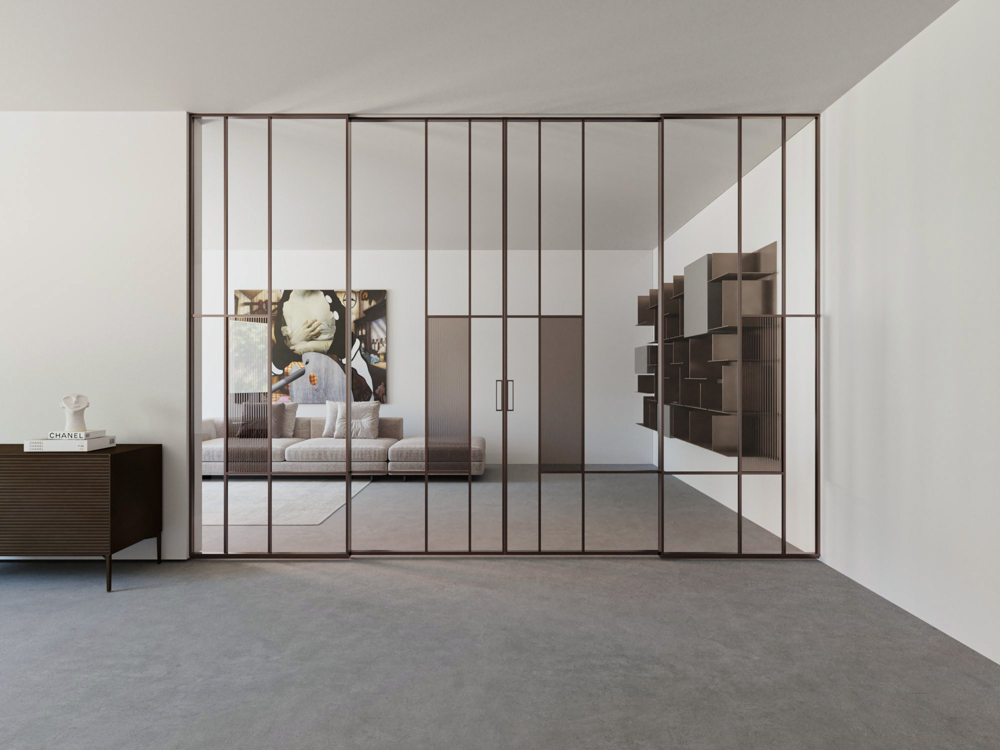
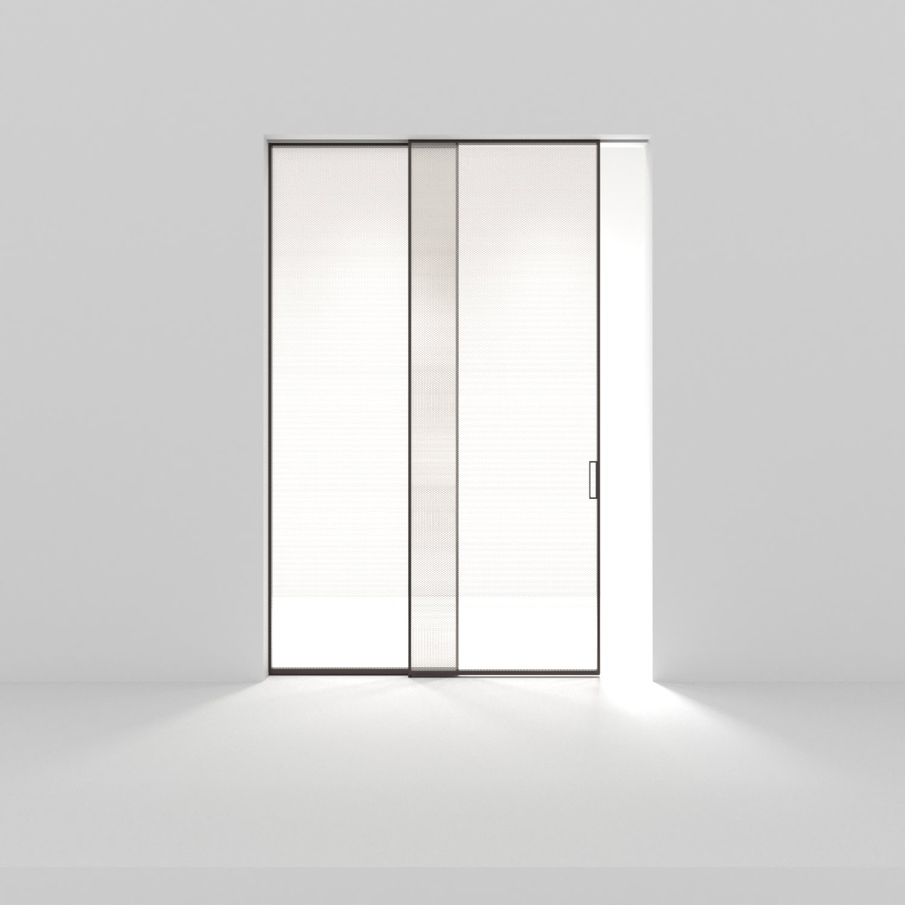
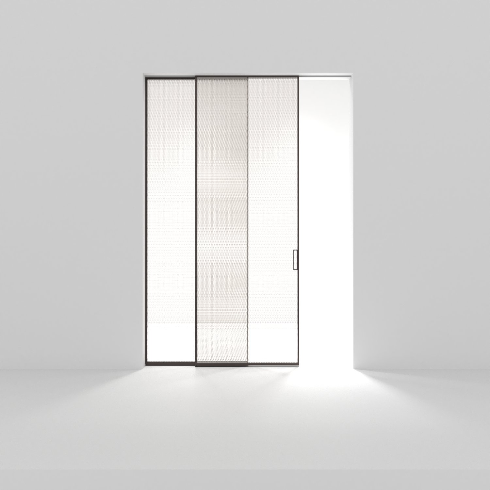
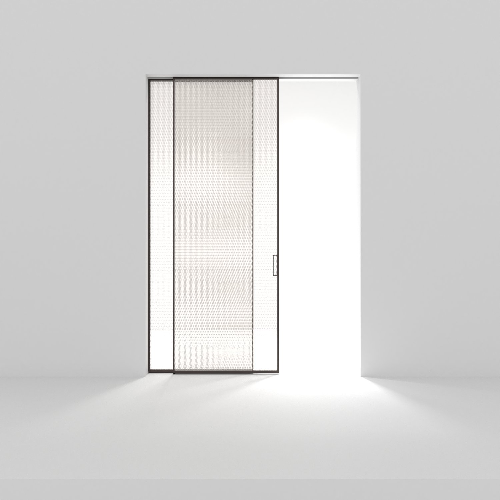
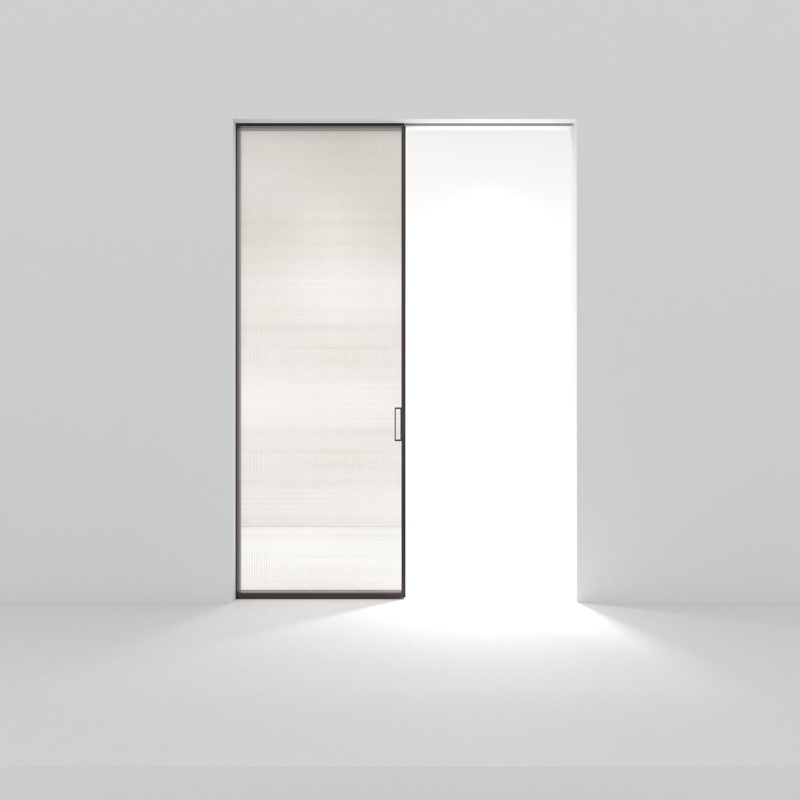

La Residencia Lantana explora la relacion entre luz natural y privacidad a traves de una puerta corrediza de vidrio dicroico de gran formato. El proyecto redefine el umbral entre interior y exterior, creando un efecto cromatico que cambia con el angulo de observacion y la hora del dia.
Se utilizaron paneles de 3.2 metros de altura en configuracion laminada, con un interlayer de PVB metalizado que genera tonos que van del dorado al violeta. La estructura de acero negro contrasta con la eterea cualidad del vidrio, anclando la composicion al terreno tropical.




